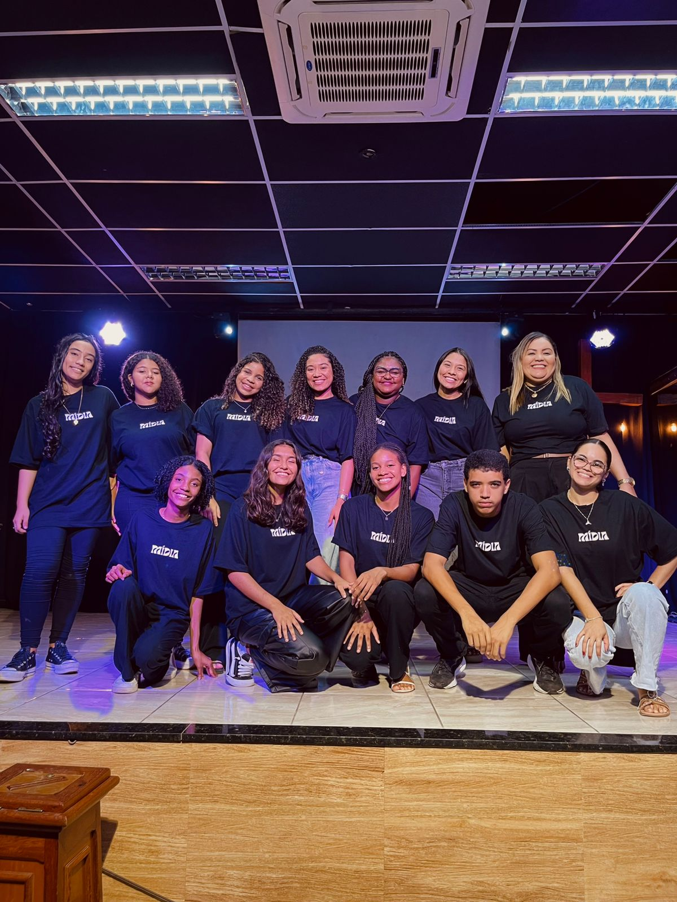

Ministério de Mídia
Usando a tecnologia para expandir a mensagem de Deus e alcançar o mundo.
O Ministério de Mídia da Igreja Batista Nova Vida tem a missão de utilizar a tecnologia e a criatividade para glorificar a Deus. Somos responsáveis por toda a comunicação visual e digital, garantindo que a mensagem do Evangelho seja transmitida de forma clara e impactante, tanto dentro da igreja quanto para a comunidade online.
Nossa equipe trabalha com diversas áreas, incluindo **transmissões ao vivo, projeção de slides, edição de vídeos, fotografia, design gráfico e gerenciamento de redes sociais.** Acreditamos que a mídia é uma ferramenta poderosa para a adoração, ensino e evangelismo. Se você tem habilidades em alguma dessas áreas ou deseja aprender, junte-se a nós!
Nosso Trabalho em Ação
Transmissão Ao Vivo
Transmissões de alta qualidade para alcançar quem não pode estar presente.

Detalhes técnicos para uma experiência de culto online imersiva.
Software e dedicação para levar a palavra a milhares de lares.

Trabalho em equipe nos bastidores para que tudo funcione perfeitamente.
Design e Conteúdo Visual

Criando artes impactantes para nossas mídias sociais.

Desenvolvendo a identidade visual do site e materiais de divulgação.

Preparando slides de louvor e anúncios para os cultos.

Edição de vídeos para testemunhos, pregações e eventos.
Programação da Semana
- Segunda-feira: Reunião e Treinamento da Equipe (19:30h)
- Siga nossas redes sociais para o conteúdo diário! @ibnovavida
Conheça Nossos Líderes:

Larissa
Líder Sênior
Participe da nossa equipe! Cadastre-se!
Para mais informações sobre o Ministério de Mídia, entre em contato conosco!
Fale Conosco Voltar para Ministérios